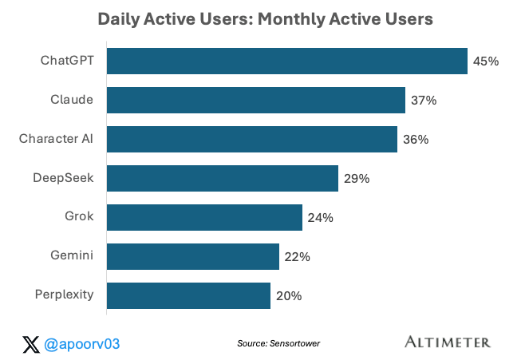
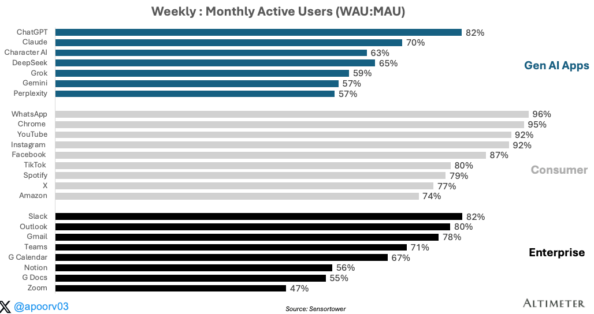
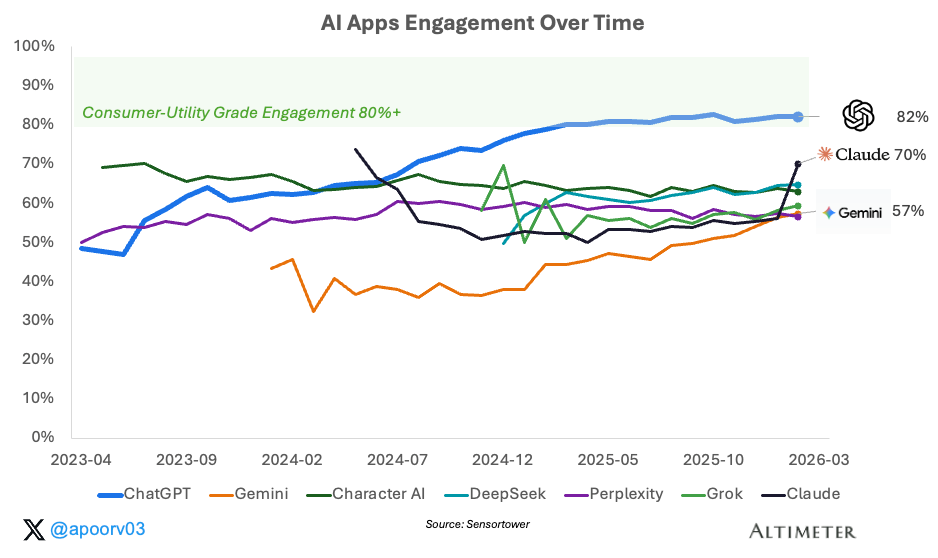
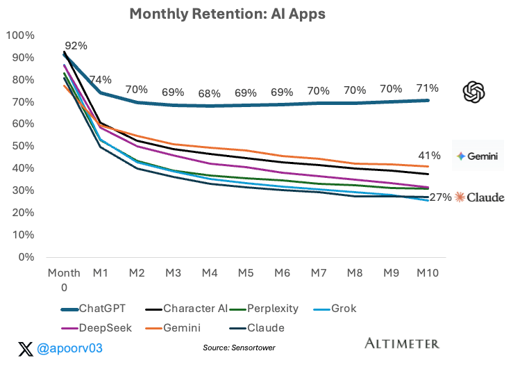
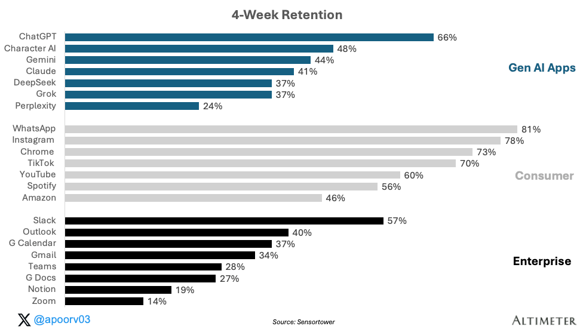
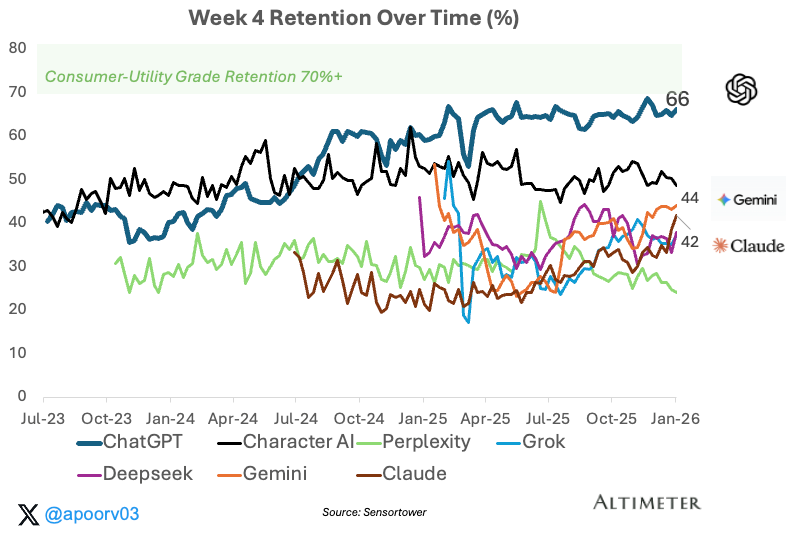

消费市场遵循幂律分布。每一个重大平台周期都会产生一个主导赢家，攫取不成比例的价值。Google占据了搜索市场的90%以上。Facebook拿下了社交。Apple攫取了移动端的利润。这种模式如此一致，几乎成了一条自然法则：消费市场不会均匀分配。它们会集中。
正如我们在第一部分中展示的，消费AI遵循着相同的剧本。ChatGPT占据约70%的市场份额。Gemini约为20%。其他所有人都在争夺残羹剩饭。
但市场份额本身并不能告诉你一个赢家是否持久。消费科技的历史上充斥着使用量飙升而后消退的产品。还记得Google Wave吗？Clubhouse呢？BeReal呢？Clubhouse在第一个月就达到了1000万下载量。BeReal曾是App Store排名第一的应用。但它们都没有建立起习惯。并非所有使用量都生而平等。一个出于好奇每月打开一次应用的用户，与一个出于习惯每天打开的用户，有着本质的不同。真正的问题不在于谁拥有最多的用户。而在于谁拥有最多的习惯性用户。而这正是参与度和留存率的用武之地。
第二部分将深入一层。使用量告诉你谁来了。参与度和留存率告诉你谁留下来了，以及他们是在形成习惯，还是仅仅在浏览。
人们实际上多久使用一次这些产品？它们是否足够粘性，以在更好或更便宜的竞争对手面前生存？这些问题区分了一个市场领导者和一个持久的帝国。
核心结论：ChatGPT不仅是最大的AI应用。它也是粘性最强的。而且它正在变得更具粘性。纵观三年的参与度和留存率数据，三个发现尤为突出：
- ChatGPT的参与度领先优势比其在AI同行中的市场份额领先优势更大。
- 放眼更广的范围，ChatGPT的参与度优于大多数企业级应用（Slack、Gmail、Outlook），并与Facebook、Spotify和X等消费级常青应用的参与度水平相当。
- 在留存率方面，同样的模式成立。ChatGPT的留存率显著高于AI同行和顶级企业级应用，并且正在稳步向最佳消费级平台收敛。
1. ChatGPT的参与度领先优势比其市场份额领先优势更大
在第一部分中，我展示了ChatGPT占据了约70%的AI周活跃用户（WAU），而Gemini以约20%位居第二。参与度数据讲述了一个更加集中的故事。

在日活跃用户/月活跃用户（DAU:MAU）这一日常参与度指标上，ChatGPT为45%。Gemini为22%。这是超过两倍的差距。Gemini报告的MAU令人印象深刻（他们在上一次财报电话会议上报告了7.5亿），但DAU:MAU更能告诉你使用深度。MAU告诉你一个月内有多少人尝试了该产品。DAU:MAU告诉你其中有多少人实际上将其作为日常生活的一部分来使用。在这个指标上，ChatGPT处于另一个层级。
2. ChatGPT已进入消费级参与度领域
让我们把视野扩大到AI之外，将新兴的AI应用类别与成熟的消费级和企业级应用进行比较。我们使用WAU:MAU，因为它更能捕捉知识工作的节奏：人们每周使用企业应用几天，而不是每天。

为了给这些数字提供背景：WhatsApp为96%。Instagram为92%。Gmail为78%。Spotify为79%。ChatGPT的参与度优于Gmail/Spotify，并且接近Instagram，这对于一个只有三年历史、没有社交图谱、没有通知驱动的内容流、也没有会自动填满的收件箱的产品来说，是非常了不起的。而且它还在进步：

三年前，ChatGPT的WAU:MAU约为50%。我当时指出，应用需要80%以上的WAU:MAU才能达到十亿用户。数十年来消费级和企业级应用的历史数据显示，参与度水平很大程度上由产品类别和核心价值主张决定。
ChatGPT打破了这一模式。其WAU:MAU已从2023年中期的约50%上升到今天的82%。这是超过30个百分点的提升。没有其他AI应用能与之接近，除了Claude似乎正在追赶上来（一个低调的亮点，在过去一个月中实现了巨大飞跃）。
这意味着：ChatGPT不再像一个AI新奇事物那样被使用。它的参与模式更像一个人们每周依赖的工具。这种参与度特征与我在第一部分的论点一致：ChatGPT的行为更像一种实用工具，而不是社交应用。人们不是为了多巴胺而刷它。他们打开它是因为他们需要它。
3. 微笑曲线：ChatGPT随时间推移变得更具粘性
参与度告诉你用户在给定时间段内回来的频率。留存率告诉你他们是否真的留了下来。而消费产品中最稀有的信号是，一个产品能否赢回那些离开的用户。
在最初的流失之后，留存曲线可以呈现三种形状：下降、趋平、或微笑。我在两年前最初的分析中涵盖了这些。大多数应用趋于平缓或下降。微笑曲线——留存率先下降后回升——是最罕见的。这很可能反映了产品改进将用户拉了回来。

在我们的数据集中，极少数产品显示出真正的微笑曲线留存率，罕见的例子包括Gmail、ChatGPT和Chrome。仅此而已。WhatsApp、Instagram、TikTok、Spotify、Slack、Outlook、YouTube：都是平坦或下降的曲线。它们能很好地留住用户，但无法随时间推移赢回用户。ChatGPT可以。而且它是在拥有9亿周活跃用户（WAU）的规模下做到的，这意味着OpenAI的产品迭代速度（语音、视觉、画布、搜索、记忆）不仅吸引了新用户，还重新激活了流失的用户。
起点已经很高
微笑曲线在考虑到留存率的起始点时更加引人注目。在第4周，ChatGPT留存了约66%的用户。每三个下载它的人中，有两个在四周后仍然活跃。

在AI应用中，差距是实质性的：Character AI为48%，Gemini 44%，Claude 41%，Perplexity 24%。在66%的水平上，ChatGPT正在建立一个稳固的用户基础。而Perplexity在24%的水平上，仍在移动端苦苦挣扎，难以建立用户基础。
与成熟应用相比，ChatGPT的第4周留存率超过了我们数据集中所有企业级应用，包括Slack。它落后于顶级的消费级实用工具（WhatsApp、Instagram、Chrome），但与TikTok处于同一区间。两年前，我绘制了采用率与留存率的对比图，发现了相同的聚类：消费级应用在右上角，企业级应用在中间，AI应用在左下角。ChatGPT此后已从AI聚类中迁移出来，进入了企业级应用区域，并正在接近消费级应用。
随规模增长的留存率
三年前，ChatGPT的第4周留存率接近40%。今天它已攀升至66%，大约提升了25个百分点。大多数应用的留存率在早期就已确定，并随着用户基础的成熟和更多轻度用户的加入而保持平稳或下降。ChatGPT反其道而行之：随着其用户基础增长了10倍，留存率却变得更好。最可能的解释是产品改进。每一次重大发布都给了用户一个新的理由回来。

这种轨迹使得微笑曲线可信。ChatGPT并非从一个疲软的起点复苏。它是从一个已经很强的基线出发进行复苏，并且是在增加数亿用户的同时做到这一点的。这种组合确实是罕见的。
结论
ChatGPT不再仅仅是最大的AI应用。它正在成为互联网上粘性最强的产品之一。高周参与度、强大的早期留存率，以及在巨大规模下仍在改善的粘性。这不是新奇效应。这是习惯的形成。
而在消费科技领域，习惯是区分"触及"与"营收"的关键。一个拥有9亿周活跃用户且留存率不断提升的产品，不仅仅是在赢得注意力。它正在建立一个帝国。
对于竞争对手来说，取代ChatGPT的机会窗口正在缩小。不是因为产品不可战胜，而是因为习惯正在复利增长。在这个规模上，每当参与度和留存率每改善一周，转换成本就会上升，引力就会变得更强。
第三部分下周发布，将关注使用时长及其对货币化的启示。
本文使用的数据来源包括Sensortower。
本通讯中呈现的信息仅代表作者观点，并不一定反映任何其他人或实体的看法，包括Altimeter Capital Management, LP（"Altimeter"）。所提供的信息被认为来自可靠来源，但对任何不准确之处不承担任何责任。本文仅供参考，不应被视为投资建议。过往表现并不保证未来结果。Altimeter是一家在美国证券交易委员会注册的投资顾问。注册并不意味着具备一定水平的技能或培训。Altimeter及其客户交易公开证券，并已作出和/或可能作出对本文提及的公司的投资或投资决策。本文表达的观点仅代表作者本人，而非Altimeter或其客户，Altimeter及其客户保留做出可能与本文观点一致和/或不一致的投资决策或进行交易活动的权利。
本文及所呈现的信息仅供信息参考之用。本文表达的观点仅代表作者本人，不构成出售任何证券的要约、购买任何证券的建议，或对任何投资产品或服务的推荐。虽然本文所含的某些信息来自被认为可靠的来源，但作者及其雇主或关联方均未独立核实这些信息，且无法保证其准确性和完整性。因此，对于此信息的公平性、准确性、及时性或完整性，不作任何明示或暗示的陈述或保证，也不应依赖于此。作者及所有雇主及其关联人员对此信息不承担任何责任，也没有义务在未来更新此信息或本文所含的分析。